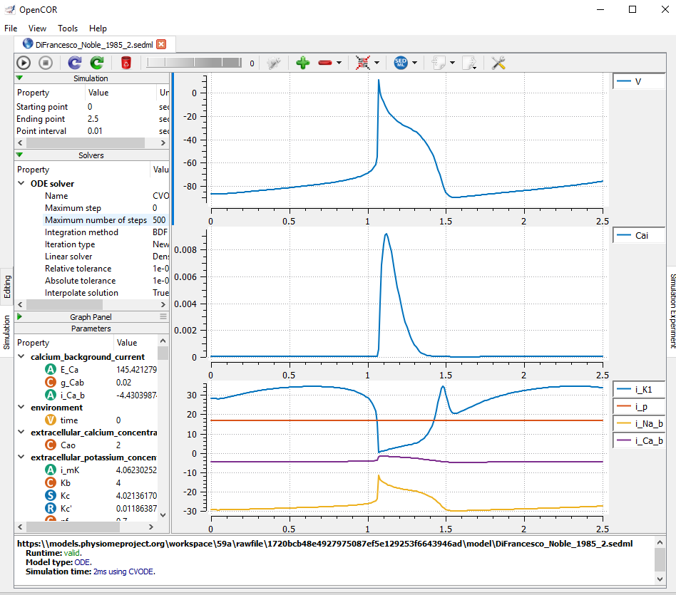

This model has been curated by Anand Rampadarath and is known to run and integrate in the OpenCOR CellML environment.
|  |
| A SED-ML simulation of Di Francesco and Noble (1985) created with OpenCOR Version 0.6 (Garny and Hunter (2015)). Here we see the necessary information (ODE solver, time step, duration, parameter values) required for the reproduction of Figs. 6 and 7 of Di Francesco and Noble (1985). |